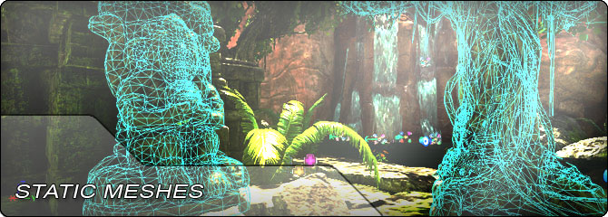

UDN
Search public documentation:
StaticMeshHomeCH
English Translation
日本語訳
한국어
Interested in the Unreal Engine?
Visit the Unreal Technology site.
Looking for jobs and company info?
Check out the Epic games site.
Questions about support via UDN?
Contact the UDN Staff
日本語訳
한국어
Interested in the Unreal Engine?
Visit the Unreal Technology site.
Looking for jobs and company info?
Check out the Epic games site.
Questions about support via UDN?
Contact the UDN Staff
UE3 主页 > 静态网格物体
静态网格物体


- 虚幻渲染结构 - 虚幻引擎 3 的细分和渲染结构指南。
- FBX 静态网格物体通道 - 有关使用 FBX 导入静态网格物体的指南。
- 光照贴图的 UV 展开 - 关于设置 UV 与光照贴图结合使用的最佳实践。
- 法线贴图的处理过程 - 有关正确处理法线贴图以在虚幻引擎中使用的指南。
- 支点描画工具 - 存储模型支点以及模型顶点数据中的旋转量信息的工具。
- 模块化环境创建 - 设计在模块化环境中使用的网格物体的指南。
- 静态网格物体编辑器用户指南 - 在虚幻编辑器中使用静态网格物体的指南。
- 网格物体简化工具 - 在虚幻编辑器中创建经过参数化简化的网格物体的指南。
- 破裂的静态网格物体 - 创建和使用破裂的静态网格物体的指南。
- 碰撞参考指南 - 静态网格物体和其他几何体类型的碰撞类型的参考指南。
- 碰撞技术指南 - 有关碰撞在虚幻引擎3内部的工作原理的技术指南。
- StaticMeshActors - 关于在虚幻编辑器中使用StaticMeshActors 的指南。
- 使用 InterpActor - 有关在虚幻引擎编辑器中使用移动器的信息。
- 使用 KActor? - 有关在虚幻引擎编辑器中使用刚体 actor 的信息。
- 静态网格物体模式 - 关于使用静态网格物体模式来放置网格物体的指南。
- Massive LOD - 在虚幻引擎 3 中使用 Massive LOD 系统创建开放 vistas 的指南。
- 交互型静态网格物体 - 有关在虚幻编辑器中使用 InteractiveStaticMeshActor 的信息。
- 程序化构建建筑物 - 创建和使用程序化构建建筑物系统的指南。
- 程序化建筑物教程 - 有关设置示例 ProcBuilding（程序化建筑物）的教程。
- 交互式植被 Actor - 有关设置和使用交互式植被 actor 的指南。